本包逐图公开合成界面、准确来源及独立结论。ADAPTED是明确适配；MAPPED是同类容器；MISSING是缺直接原参考；FAIL保留可见问题。拍图/并包完整不等于严格全产品1:1，也不证明真实桌面。旧图、旧失败和旧源码身份不倒改；修复须另看新来源。
env-table-demo-start-completion-write-refused · 1440×900
ADAPTED — Nine complete rows (#1-#9); no clipped tenth-row fragment or large unused table gap. Pager fully visible.,The red storage-failure toast and full result-band copy retain original-record/saved-starting/retry wording; the first row shows retry Open and unsaved simulated result.,9 versus frozen 10 is legitimate safety-band capacity ADAPTED, not strict 1:1. No original accepted-bar image or real persistence/retry proof.
同类参考容器：environment-running；不是同名原商业执行。
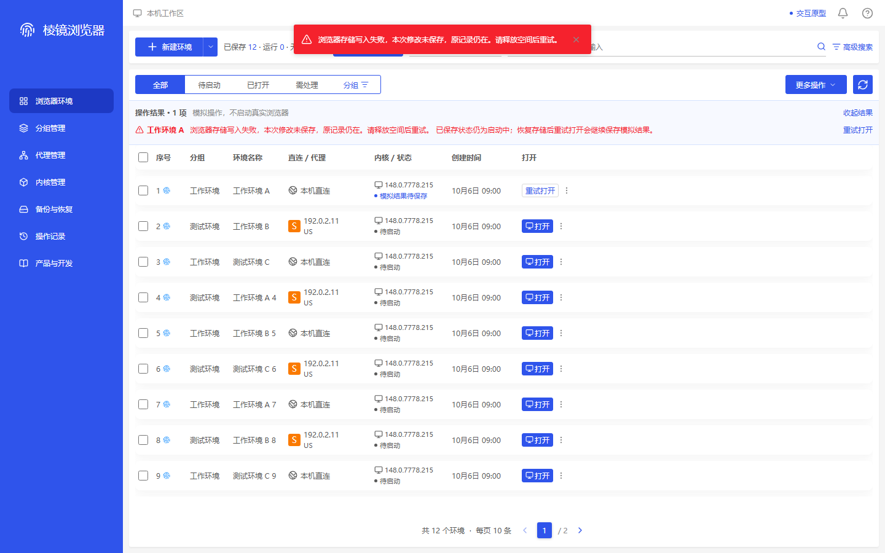
51bda62a968fd259c2da7d31ca793844c9e88ba7c7919159e5f7c8e302c6c912
env-table-demo-stop-completion-write-refused · 1440×900
ADAPTED — Nine complete rows (#1-#9), a clean table end and visible pager; no whole-row clipping.,Storage failure, retained saved state and recovery-copy remain visible; first-row/result-band actions say retry Close rather than silently claiming completion.,9 versus frozen 10 is legitimate safety-band capacity ADAPTED. This synthetic refusal photograph does not establish a real stop, write recovery or accepted-bar original.
同类参考容器：environment-running；不是同名原商业执行。
1a3e341f68333377f022a586ee99d7e70ec5d0a44ac3c296c26a832663a353f6
env-table-demo-mixed-terminal · 1440×900
ADAPTED — Eight complete rows (#1-#8), without a clipped ninth-row fragment; pager clear and remaining space not excessive.,Three visible result lines distinguish simulated Open, failed proxy/no direct fallback and already-running/no repeat; selected rows and status/action labels remain legible.,8 versus frozen 10 is legitimate multi-line safety-band ADAPTED; simulated running and mixed results are not native effects.
同类参考容器：environment-running；不是同名原商业执行。
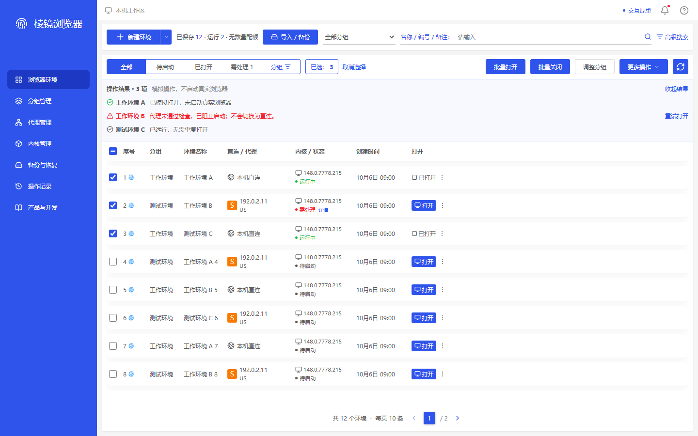
3aa4a9163a28052fab97352ef79de8a56e33aa5cc887f24f34ad3cc208fd336a
env-table-native-mixed-pending · 1440×900
ADAPTED — Eight complete rows and a clear pager; no partial whole row or large unused capacity gap.,The result band preserves opened, synthetic authentication rejection/no direct fallback and reading-saved-configuration lines; rows #2/#3 show pale processing actions.,8 versus frozen 10 is legitimate safety-band ADAPTED. Pending labels do not prove all five native states concurrently or accepted backend work.
同类参考容器：environment-running；不是同名原商业执行。
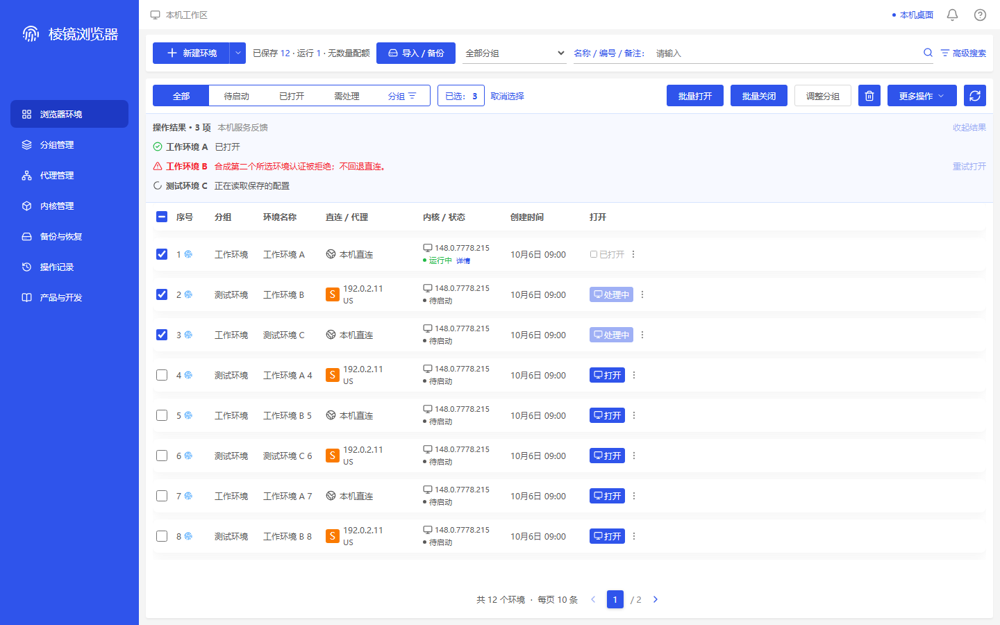
98dbe9fd770e7ebdf56a54583d9260ec98625bd5f08cd74f1658380a81619ec6
env-table-native-mixed-accepted · 1440×900
ADAPTED — Eight complete rows with a clean last-row boundary immediately above the clear pager; no clipping despite both queue and result bands.,Zero-wait queue copy, opened row #1, authentication-rejection/no-direct line and starting/cancel-start row #3 are present and readable.,8 versus frozen 10 is legitimate queue/safety-band ADAPTED. Accepted/starting wording is synthetic presentation, not real scheduler or native acceptance.
同类参考容器：environment-running；不是同名原商业执行。
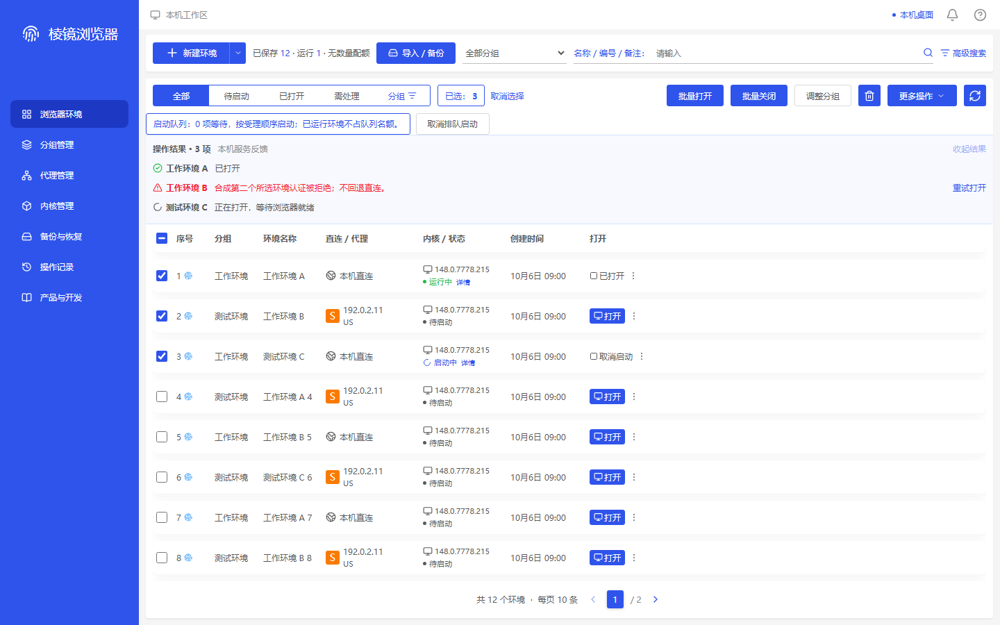
5b43b814e10779cf9cd681d95eab1933070b4c09858d09f267a601564fab0c6c
env-table-native-fifo-active-queued · 1440×900
ADAPTED — Eight complete rows, no clipped next row, and a fully visible pager; no large unused table gap.,One-wait accepted-order queue/cancel copy and two starting-result lines remain; rows #1/#3 show starting and cancel-start labels.,8 versus frozen 10 is legitimate queue/result-band ADAPTED. This slice is not real FIFO ordering, task ownership or all-state concurrency proof.
同类参考容器：environment-running；不是同名原商业执行。
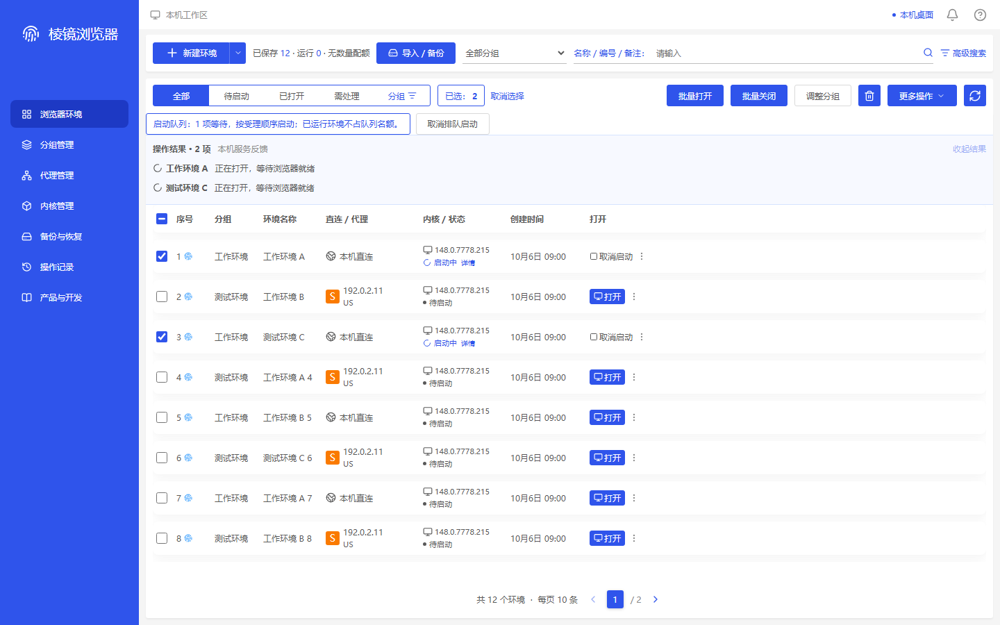
0f0cc267f453a003736609df6cca3625af7c1247801d10e21daa5b9cef16d8ea
env-table-native-fifo-stopping-disabled · 1440×900
ADAPTED — Nine complete rows (#1-#9), no clipped next row, and a clear pager; table capacity is used naturally.,Submitting-close and unfinished/retry result lines remain; row #1 shows closing and a gray opened action, while row #3 retains its detail/retry context.,9 versus frozen 10 is legitimate result-band ADAPTED. Gray styling is visible, but interaction refusal and real stop/scheduling are not established by pixels.
同类参考容器：environment-running；不是同名原商业执行。
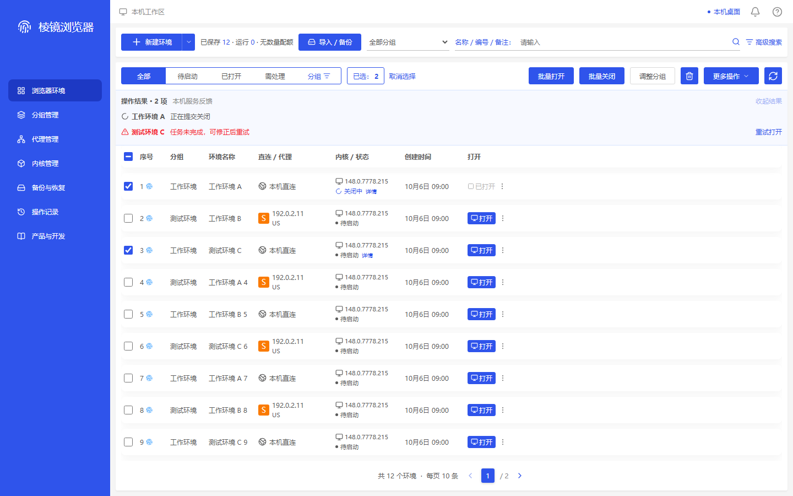
8fe75d41a5ae76d7f1a3da58773bde480429fe3f2f1e4b252d25f2638b2ff6c7
env-table-native-missing-saved-proxy · 1440×900
ADAPTED — Nine complete rows and visible pager; no partial tenth row or excessive unused gap.,The result-band refusal/no-direct warning and two-line red missing-proxy/no-direct text remain in rows #2/#4/#6/#8; their Open buttons remain blue.,9 versus frozen 10 is legitimate safety-copy capacity ADAPTED. The warning original is MISSING; blue buttons do not prove UI predispatch blocking or actual no-direct enforcement.
同类参考容器：environment-list；不是同名原商业执行。
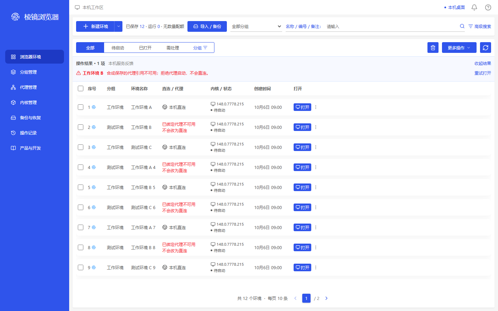
9bca70536f4e499f5b4238e943cee1981843894a464c15d872652362fb9addad
env-table-native-precheck-pass-expanded · 1440×900
ADAPTED — Ten settled table rows and a clear pager; the panel is visibly anchored below row #2 detail, not overlapping pagination.,Mandatory-proxy/no automatic direct, current-session precheck, observed IP, same-instance/not per-request/not containment-acceptance disclaimer, bullets and synthetic target/channel text remain visible.,The bounded long report is an ADAPTED runtime panel, not the frozen action-menu original. Any lower scroll continuation is not pixel-certified; own-scroll was not exercised here.
同类参考容器：environment-row-menu；不是同名原商业执行。

590961c1674fe7a7dbe02d8d57e9739ae2fa100d8d6644162db53bade02d5944
env-table-native-precheck-save-pending-expanded · 1440×900
ADAPTED — Ten settled rows; anchored bounded panel remains well above the fully visible pager.,Save-result pending/unconfirmed wording remains in both the row action and report, alongside mandatory proxy and the full visible same-instance/not continuous-network/not containment disclaimer.,ADAPTED safety report; no exact pending-save original, actual save recovery, or pixel certification of every lower scroll paragraph.
同类参考容器：environment-row-menu；不是同名原商业执行。

c716530cc3d29ff82fdd8b831d5c634a2504eb049997baecd877323946e277d8
env-table-native-historical-network-disclaimer · 1440×900
ADAPTED — Ten settled rows and clear pagination; the bounded popup remains attached to row #2 detail.,Historical report text explicitly does not prove the original historical session is running, per-page continuous egress samples or full-path outage/containment acceptance; the long paragraph and bullets remain visible.,ADAPTED historical disclaimer, not a direct original or a live network reading. Lower continuation text is not all pixel-verified.
同类参考容器：environment-row-menu；不是同名原商业执行。

751fe3590234103b7d855541ae467cccf9e9105fb073b123928cd3537b465ef1
env-table-native-reconcile-network-disclaimer · 1440×900
ADAPTED — Ten settled rows with the popup clear of pagination and naturally adjacent to the row #2 detail anchor.,Reconcile-session action, original-session pending-reconcile and service did-not-rebuild/take-over wording remain; the long historical/not per-request/not full-path-acceptance paragraph is readable.,ADAPTED reconciliation disclaimer; no exact frozen state, original-process reconciliation proof or certification of unseen lower scroll text.
同类参考容器：environment-row-menu；不是同名原商业执行。

cb9016f8083c2ebdc167eaa9fabd84c5341edb816ffeb18a9a5695e63350214a
env-table-native-containment-stopped-warning · 1440×900
ADAPTED — Ten settled rows and clear pager; the taller anchored popup remains above pagination.,PROXY_CONNECTION_FAILED, current-fault resource-exit-confirmed wording, preserved-proxy/no automatic direct/no old-window rebuild and the long historical non-acceptance disclaimer are visible; channel/target text is also visible.,ADAPTED warning content, not the action-menu original or real resource exit/isolation acceptance; additional lower continuation is not all pixel-certified.
同类参考容器：environment-row-menu；不是同名原商业执行。
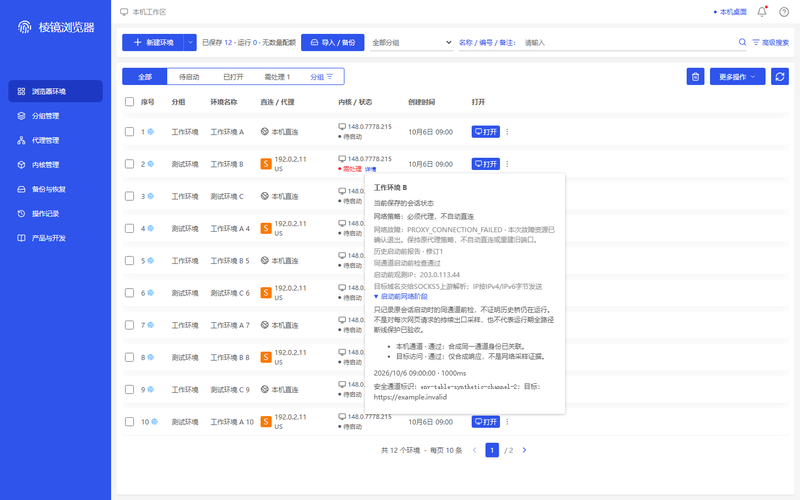
376cc5af7d167c3f8810089b0c726ef09d8d2a1e23f8765f0c48160f88f5805d
env-table-native-containment-unconfirmed-warning · 1440×900
ADAPTED — Ten settled rows; the row #2 anchored popup is above the clear pager with no structural overlap.,Closing/resource-release-pending and retry-resource-cleanup wording remain, as do current-session-exit-unconfirmed, preserved-proxy/no direct/no rebuild and the historical non-acceptance disclaimer.,ADAPTED safety warning; no actual resource-release/containment or callback-retry proof, and no claim that every lower paragraph was viewed.
同类参考容器：environment-row-menu；不是同名原商业执行。

97ae9d4afcfbd6e931a670139630c02ec01561f2b394c1a6f5cd369b02ac2dd9
env-batch-successful-page-two · 1440×900
ADAPTED — The centered approximately 1040x592 frame at x=200/y=162 retains the frozen modal geometry; #26 is on one line and its full result row is visible.,Page 2/2, previous/next controls, reload-without-reexecution, BATCH_INCOMPLETE, continuation copy, boundary disclosure indicator and footer actions are fully visible.,ADAPTED persistent-batch content, not a direct proxy-bound original. The saved attempt is failed/partial (2 completed, 1 failed, 23 unexecuted); successful page capture is not batch success or native acceptance.
同类参考容器：proxy-bound；不是同名原商业执行。
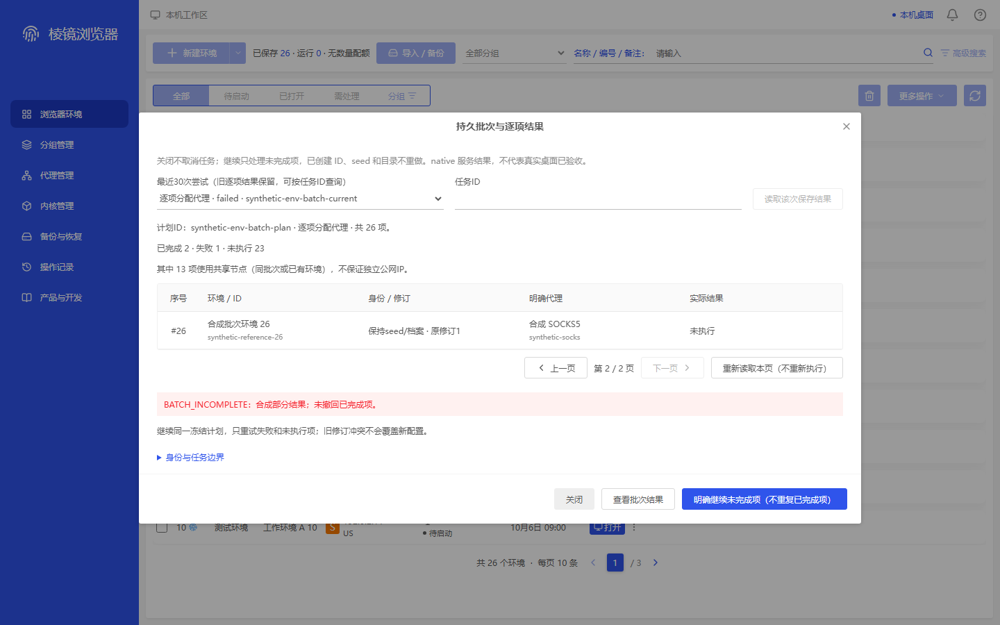
9facb910883e7838cce483c7782e2d5d83c472a3006f490737c3fa1345044a57
env-batch-dense-table-bottom · 1440×900
ADAPTED — Frozen approximately 1040x592 centered modal geometry is retained. At the inner table bottom, #22-#25 are each single-line labels with four full result rows.,Full page 1/2 pager, reload, partial-result warning, continuation copy, boundary disclosure indicator and fixed footer are visible; top-body text leaving the scroll slice is not deletion or whole-row clipping.,Saved metadata reports natural outer-body bottom top=157, height=480, total=637, remaining=0. This supports the pictured endpoint, not an independently replayed scroll/callback or simultaneous view of all 25 rows.
同类参考容器：proxy-bound；不是同名原商业执行。
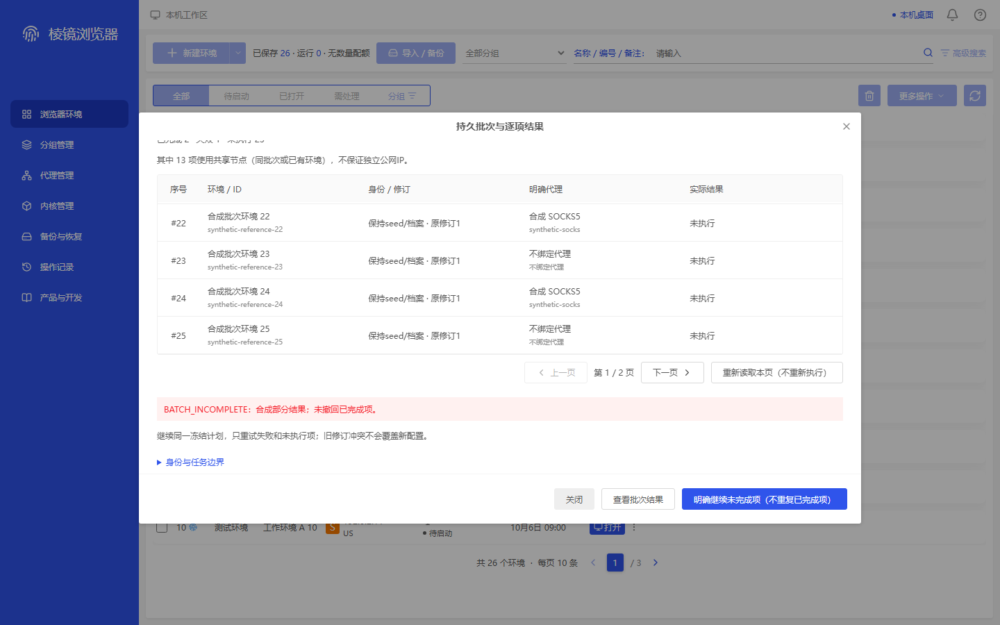
aa5dc07c3686005bce4d3f47075bde8ccfc65a5df03f03349813a83dab4775b6
env-batch-continue-only-unfinished · 1440×900
ADAPTED — Frozen approximately 1040x592 centered modal geometry remains. Four whole result rows show committed #1/#2 and unexecuted #3/#4; the visible current inner table ends cleanly.,Accepted-next-attempt selector, 2 completed/0 failed/24 unexecuted summary, full page 1/2 pager/reload, boundary disclosure indicator and close/view/cancel-remaining-preserve-completed footer are visible.,Saved natural outer-body bottom is top=71, height=480, total=551, remaining=0. ADAPTED presentation does not clear B10-UNKNOWN-REMOUNT-REQUEST-UNPROVEN or B10-BACKEND-UNFINISHED-ENFORCEMENT-UNPROVEN; four rows do not prove all 24 unfinished items or retry enforcement.
同类参考容器：proxy-bound；不是同名原商业执行。
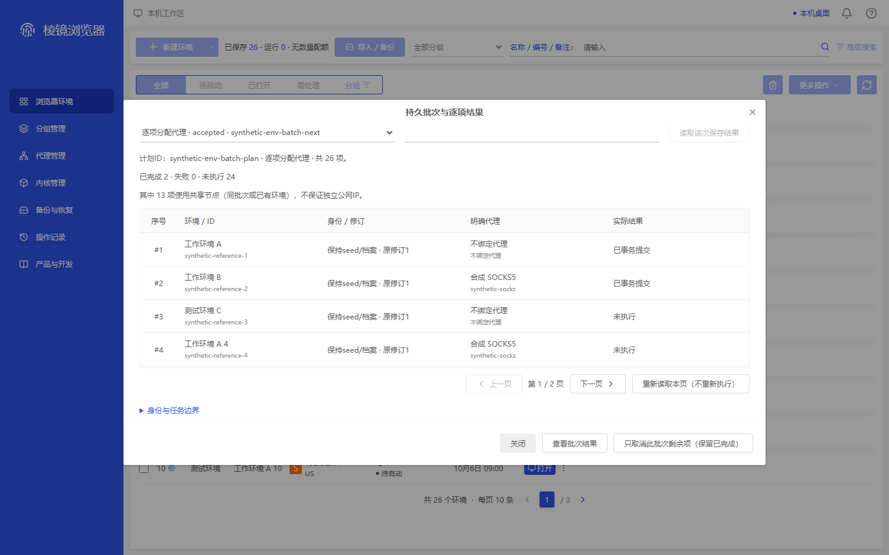
7ad6285299a3bc0e059d4ad7a362e88476b854409c90579f4c11eee9733bd070
env-table-demo-start-completion-write-refused · 1280×800
ADAPTED — Seven complete rows (#1-#7); no clipped eighth-row fragment, excessive unused gap or obscured pager.,The full red failure/result-band recovery copy and retry-Open actions remain legible, including retained original record and saved-starting wording.,7 versus frozen 8 is legitimate safety-band capacity ADAPTED, not literal text clipping or strict 1:1. No real persistence/recovery or original accepted-bar evidence.
同类参考容器：environment-running；不是同名原商业执行。
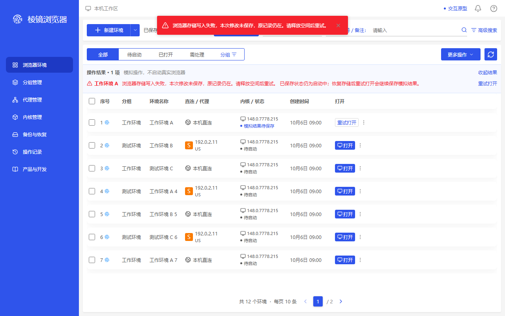
63b3c26ace331358dcaa9a7a3842d6b392d8d015f09ddda18d4bbe3ea936cdd2
env-table-demo-stop-completion-write-refused · 1280×800
ADAPTED — Seven complete rows and a fully visible pager; there is no partial eighth row or large unused table gap.,Storage failure, original-record retention, saved-state and recovery wording remain; retry-Close is visible in the first row and result band.,7 versus frozen 8 is legitimate safety-band capacity ADAPTED. The synthetic failure slice does not prove real stop, persistence recovery or accepted-bar matching.
同类参考容器：environment-running；不是同名原商业执行。
0ac5ee708e67b0b9425e9e9e195afc454e996eed18afe06140b96cc6201b7ec8
env-table-demo-mixed-terminal · 1280×800
ADAPTED — Six complete rows (#1-#6), no clipped seventh-row fragment, and a clear pager; no large unused table gap is visible.,All three mixed-result lines remain visible: simulated Open, proxy failure/no direct fallback, and already running/no repeat; selected-row statuses/actions stay readable.,6 versus frozen 8 is legitimate multi-line safety-band ADAPTED, not lost data or a strict-capacity FAIL; no native running proof.
同类参考容器：environment-running；不是同名原商业执行。
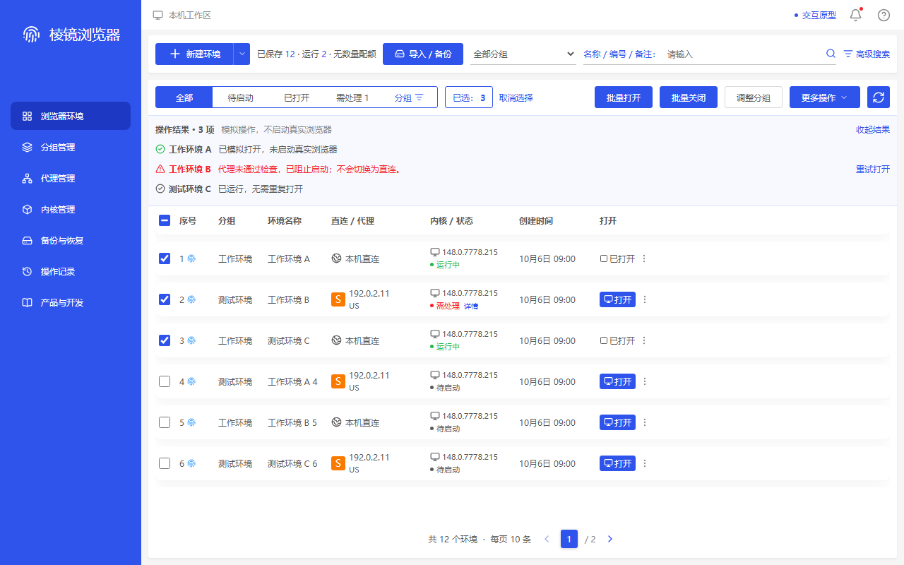
57412b4648531079191ca73ca7e46eb2e5051e6deea9a6b21917d9132fe24491
env-table-native-mixed-pending · 1280×800
ADAPTED — Six complete rows, a clean table end and visible pager; no whole-row clipping or large unused capacity gap.,Opened, synthetic authentication rejection/no direct fallback and reading-saved-configuration lines remain in full; rows #2/#3 visibly retain processing actions.,6 versus frozen 8 is legitimate safety-band capacity ADAPTED. This pending slice is not accepted-native work or all-five-state concurrency evidence.
同类参考容器：environment-running；不是同名原商业执行。
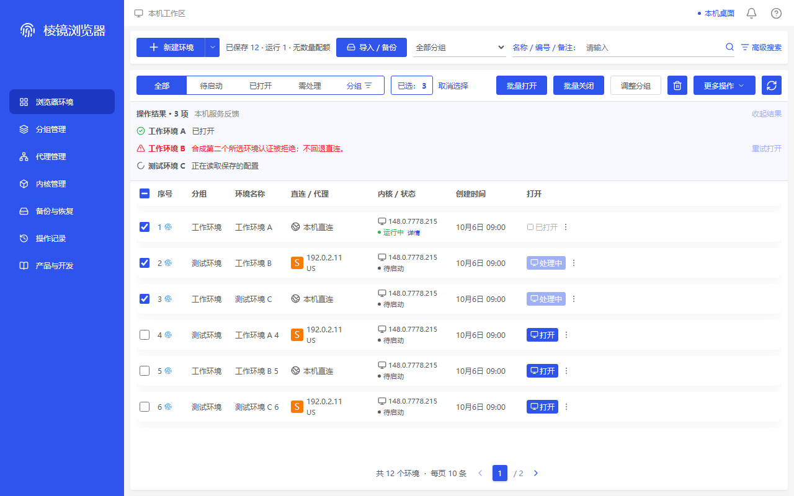
d7ab0d1a5d475d23dc5fcb2adbe106bf6af74e646cd9c93027723b8664114609
env-table-native-mixed-accepted · 1280×800
ADAPTED — Six complete rows, with no seventh-row fragment and a fully visible pager despite the queue and three-line result bands.,Zero-wait accepted-order queue text and the opened/rejection/starting lines remain; row #3 shows starting and cancel-start, while row #2 retains the synthetic failure context.,6 versus frozen 8 is legitimate queue/safety-band ADAPTED, not strict 1:1. Accepted wording is not real native or scheduler acceptance.
同类参考容器：environment-running；不是同名原商业执行。
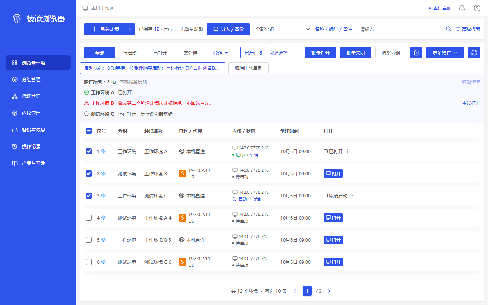
406cc675ef273f8e8b0f6467f90d8e903856893eaceb4553c9fd47c57f2f41a3
env-table-native-fifo-active-queued · 1280×800
ADAPTED — Six complete rows without a clipped seventh row or large unused gap; pagination is clear.,The one-wait queue/cancel band and two starting-result lines remain readable; selected rows #1/#3 retain starting/cancel-start labels.,6 versus frozen 8 is legitimate queue/result-band ADAPTED. No exact FIFO original, real scheduling order or full native-state concurrency proof is supplied.
同类参考容器：environment-running；不是同名原商业执行。
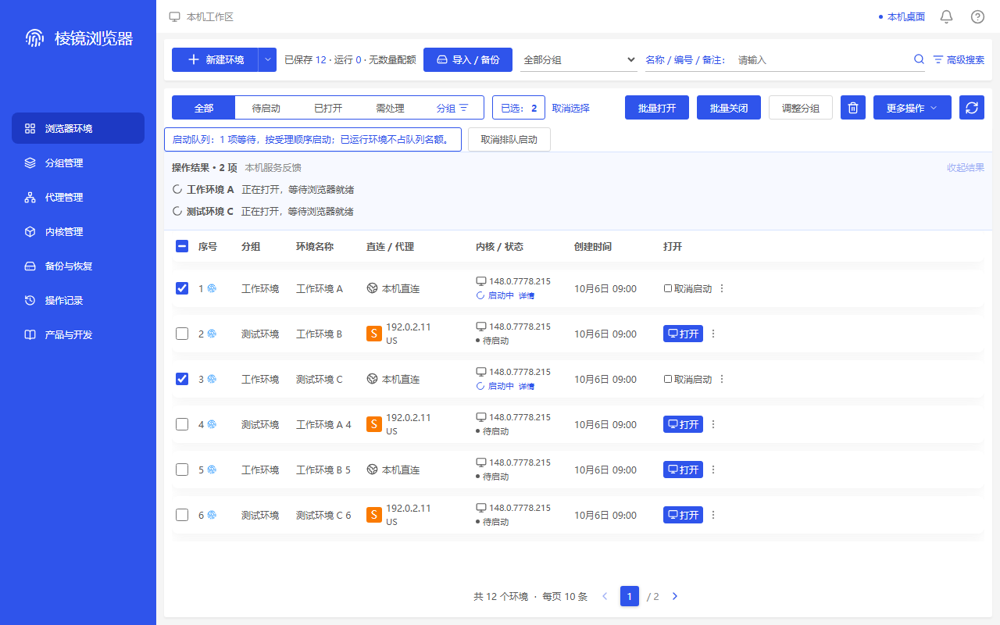
0dd3059d5dc7cfc00d780967fd7bc4d408f21c47114037cc25b1095ea7861c17
env-table-native-fifo-stopping-disabled · 1280×800
ADAPTED — Seven complete rows, no eighth-row fragment and a clear pager; capacity is used naturally below the two-line result band.,Submitting-close and unfinished/retry copy remains; row #1 shows closing and a gray opened action, not a claim of completed cleanup.,7 versus frozen 8 is legitimate safety-band ADAPTED. Disabled-looking styling is not interaction/callback refusal or real stopping evidence.
同类参考容器：environment-running；不是同名原商业执行。
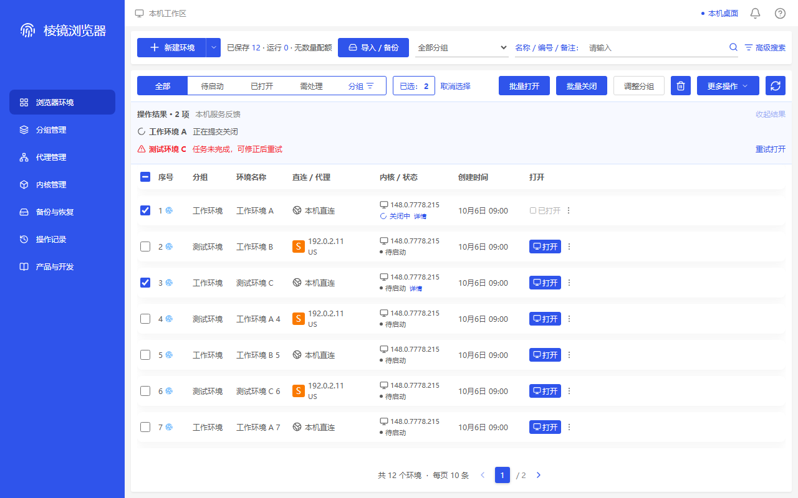
a2cf73d039319f8d7075dcb944718c3cfd301c18bba04dd0d3b09faa2797f719
env-table-native-missing-saved-proxy · 1280×800
ADAPTED — Seven complete rows and a clear pager; no clipped eighth row or excessive empty table gap.,The refusal/no-direct result line and two-line missing-proxy warnings are visible in rows #2/#4/#6; their Open buttons remain blue.,7 versus frozen 8 is legitimate safety-copy capacity ADAPTED. Direct warning original remains MISSING and no UI predispatch-block or real no-direct enforcement is certified.
同类参考容器：environment-list；不是同名原商业执行。
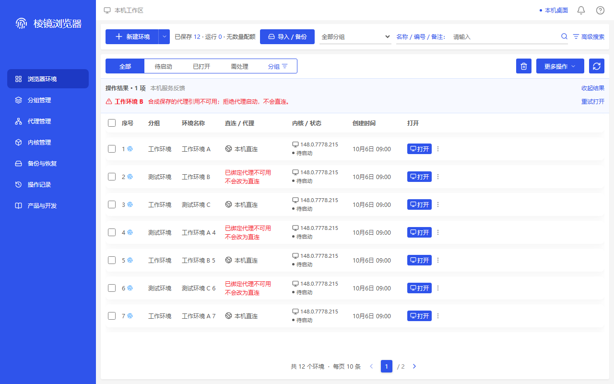
73abeada22b98575e52c4f3be15fdf744992cd1542199a72ea9463f9819d5ab5
env-table-native-precheck-pass-expanded · 1280×800
ADAPTED — Eight settled row boxes; row #2 detail anchors the bounded panel, whose lower edge is approximately 8 pixels above the fully visible pager, not over it.,Mandatory-proxy/current-session report and the long same-instance/not per-request/not full-path-acceptance disclaimer remain readable, including bullets and synthetic target/channel text.,ADAPTED runtime content and height capping; not a direct menu original or live precheck acceptance. Own-scroll/tail text is not independently exercised or fully pixel-certified; all paragraphs need not fit this slice.
同类参考容器：environment-row-menu；不是同名原商业执行。
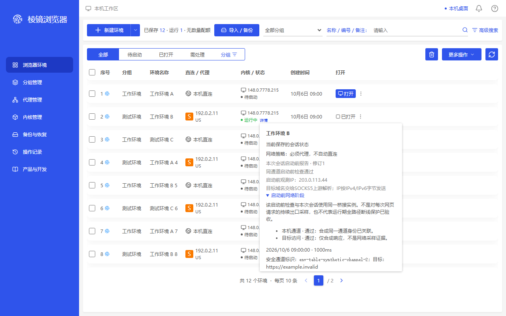
55dd06456ee8191f0ae0098cd35afd1b9dfd5c3057746f89c4fcb114ceb6bf9e
env-table-native-precheck-save-pending-expanded · 1280×800
ADAPTED — Eight settled row boxes and clear pager; the naturally adjacent row #2 detail panel ends approximately 8 pixels above pagination.,Save-result pending/unconfirmed row/report wording remains, together with mandatory proxy, expanded long disclaimer, bullets and synthetic target/channel text.,ADAPTED bounded safety panel, not an original pending-save reference or real recovery proof. Lower continuation/own-scroll is not pixel-certified and is not required to fit without scrolling.
同类参考容器：environment-row-menu；不是同名原商业执行。
a588863a55ddcbcb568ae396befc7e7266f76c46f189765ee19056a7731a961e
env-table-native-historical-network-disclaimer · 1280×800
ADAPTED — Eight settled rows; the row #2 anchored panel terminates approximately 8 pixels above the clear pager.,The long historical disclaimer remains readable: original-session running, continuous per-page samples and full-path outage/containment acceptance are explicitly not proved.,ADAPTED historical safety copy and bounded scroll slice, not a live reading or exact original. Unseen continuation paragraphs are qualified, not newly failed or demanded as extra evidence.
同类参考容器：environment-row-menu；不是同名原商业执行。
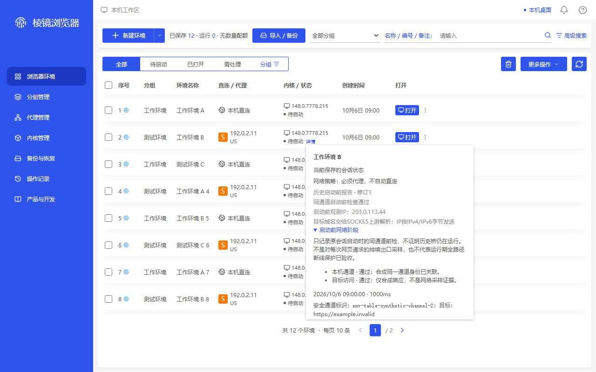
170d889aabc591233947d6cbc9e3c3074d45234a43bb56227cc6ebb408fab9b9
env-table-native-reconcile-network-disclaimer · 1280×800
ADAPTED — Eight settled rows; the anchored bounded panel leaves an approximately 8-pixel separation above the fully visible pager.,Reconcile action/original-session-pending copy and the long service-did-not-rebuild-or-take-over/historical/non-continuous/non-acceptance disclaimer remain visible.,ADAPTED safety report, not direct original or real reconciliation. Own-scroll and any unseen continuation remain outside pixel proof, without requiring every paragraph to fit at once.
同类参考容器：environment-row-menu；不是同名原商业执行。
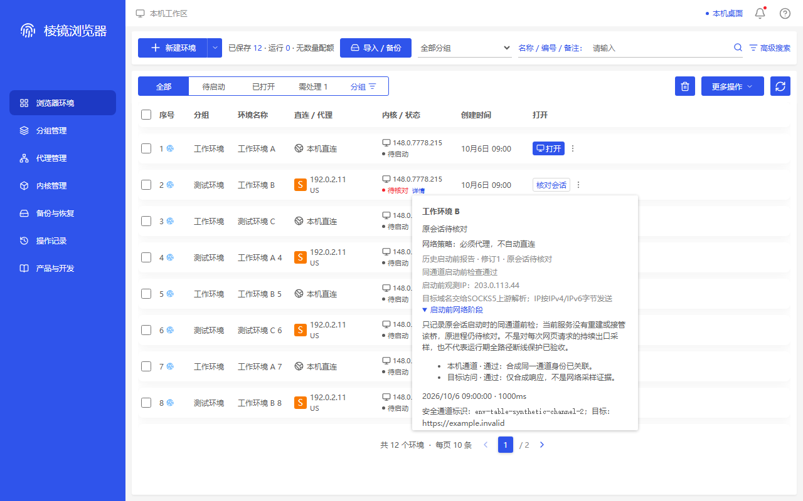
b1985a19355bbfa22b4d9f352eeaf78b4002428a5201ab5e6a0e6e2a39b21cc7
env-table-native-containment-stopped-warning · 1280×800
ADAPTED — Eight settled rows; the taller row #2 anchored report is capped approximately 8 pixels above the clear pager, with no pager overlap.,PROXY_CONNECTION_FAILED, current-fault exit-confirmed wording, preserved-proxy/no direct/no rebuild and the long historical non-acceptance disclaimer remain visible through the timestamp/bullets.,ADAPTED bounded safety report. Lower channel/target/continuation content is not visible in this slice and is not pixel-certified; this is not deletion, a mandatory all-text-fit failure or real exit/isolation acceptance.
同类参考容器：environment-row-menu；不是同名原商业执行。
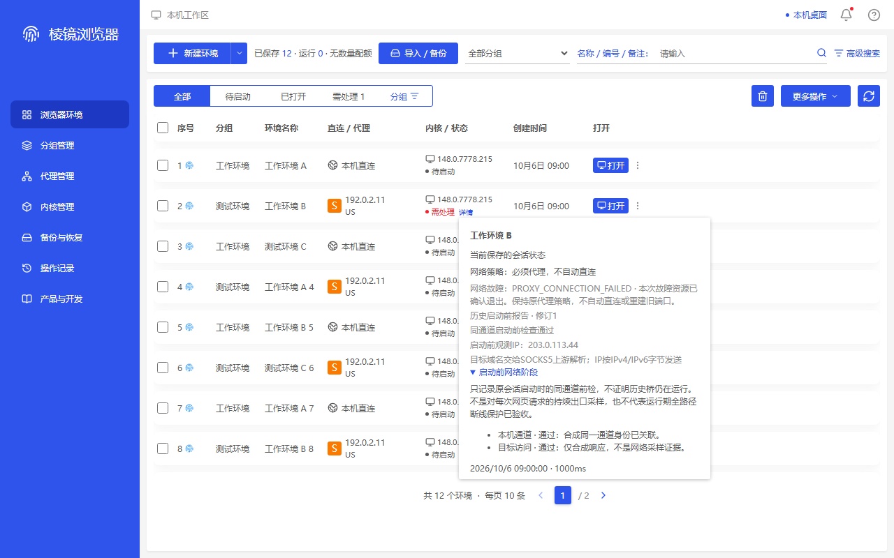
4de99fac2312ecc33a0968714614cff8a73d53d97d634be4ee8d60d031b3c3b3
env-table-native-containment-unconfirmed-warning · 1280×800
ADAPTED — Eight settled rows; the row #2 detail popup is height-capped approximately 8 pixels above pagination, leaving the complete pager visible.,Closing/resource-release-pending, retry-resource-cleanup, current-session-exit-unconfirmed and preserved-proxy/no direct/no rebuild remain; the long historical non-acceptance paragraph and timestamp are readable.,ADAPTED safety report. Lower channel/target/continuation is not visible or pixel-certified here; intended scroll-tail absence is not a structural FAIL or real cleanup/containment/callback proof.
同类参考容器：environment-row-menu；不是同名原商业执行。
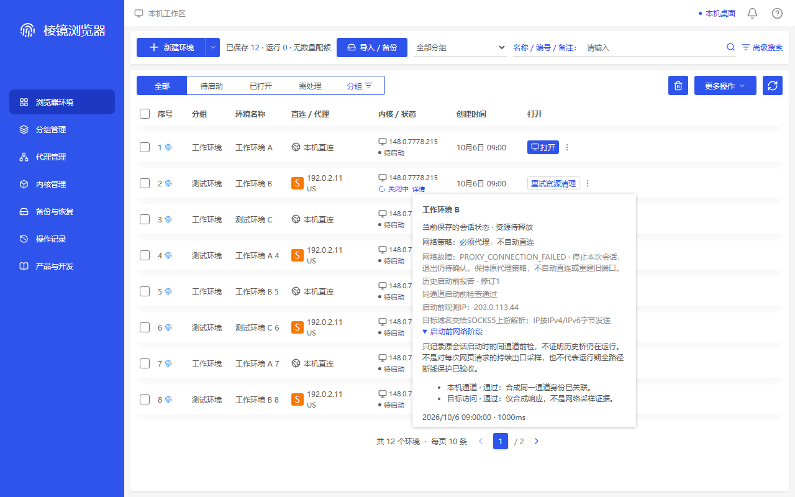
7fe4f630b9fcdaa2aa894974c5b84f57d9b56a995a9135cd1cde97f92c624195
env-batch-successful-page-two · 1280×800
ADAPTED — The approximately 1040x592 centered frame at x=120/y=112 retains the frozen modal geometry. #26 is single-line and its full result row is visible.,Full page 2/2 pager/reload, BATCH_INCOMPLETE, continuation copy, boundary disclosure indicator and footer actions remain visible, without a smaller-window geometry change.,ADAPTED persistent-batch state; the failed/partial saved attempt (2 completed, 1 failed, 23 unexecuted) is not batch success, direct original or native acceptance.
同类参考容器：proxy-bound；不是同名原商业执行。
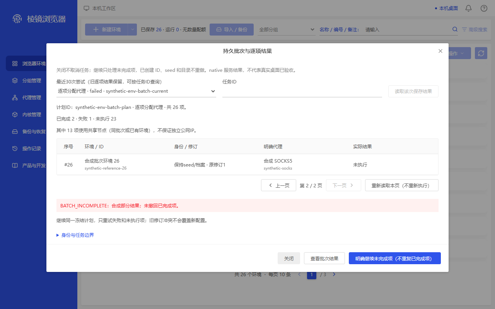
d1a8535092e3f2e8836017e1c894823d52de8d27b12e427565a0a537fcc6fa10
env-batch-dense-table-bottom · 1280×800
ADAPTED — The frozen approximately 1040x592 centered frame is retained at x=120/y=112; inner-bottom rows #22-#25 have single-line labels and full visible result cells.,Full page 1/2 pager/reload, partial-result warning, continuation copy, boundary disclosure indicator and footer are visible. Top-body text exiting the intended scroll slice is not lost data or row clipping.,Saved natural outer-body bottom is top=157, height=480, total=637, remaining=0. ADAPTED presentation supports this visible endpoint only, not independently replayed scrolling or all-25-row/native proof.
同类参考容器：proxy-bound；不是同名原商业执行。
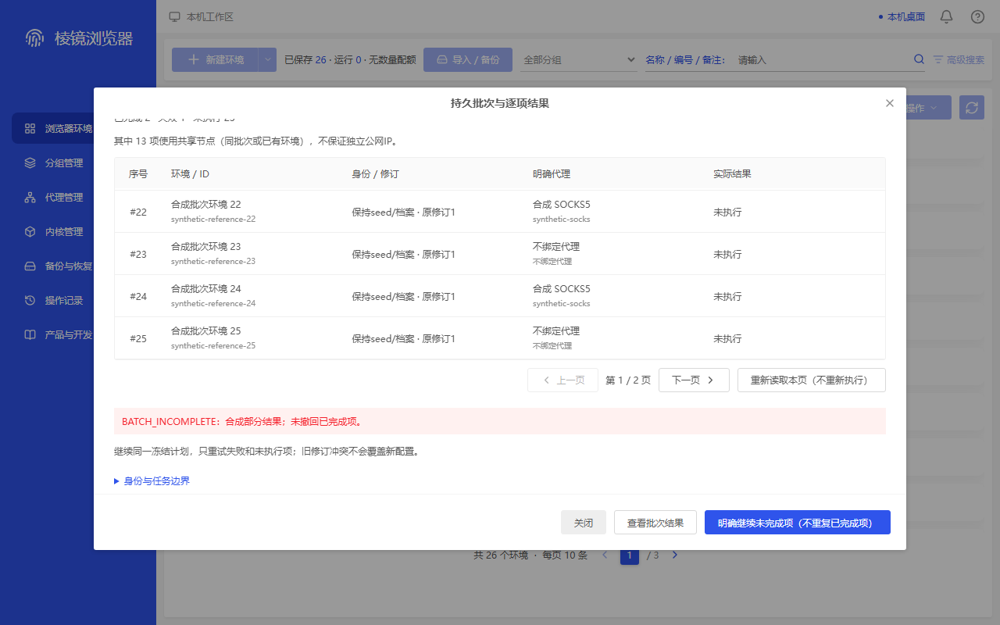
7a64e5f74e3b971376d8bded6bb735abde59e412207f629d28628712a3e93afd
env-batch-continue-only-unfinished · 1280×800
ADAPTED — The frozen approximately 1040x592 centered frame remains at x=120/y=112. Four complete rows show committed #1/#2 and unexecuted #3/#4, with a clean current inner-table end.,Accepted-next-attempt selector and 2 completed/0 failed/24 unexecuted summary remain; the full page 1/2 pager/reload, disclosure indicator and close/view/cancel-remaining-preserve-completed footer are visible.,Saved natural outer-body bottom is top=71, height=480, total=551, remaining=0. ADAPTED pixels do not clear the two B10 source limits or establish all remaining items, real retry enforcement or native persistence.
同类参考容器：proxy-bound；不是同名原商业执行。
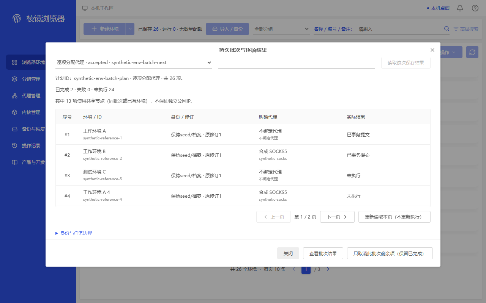
2c421f2c49b1d6d0f4535ded84262dc2418f9b93ea0fd868e69494ef446bb09a